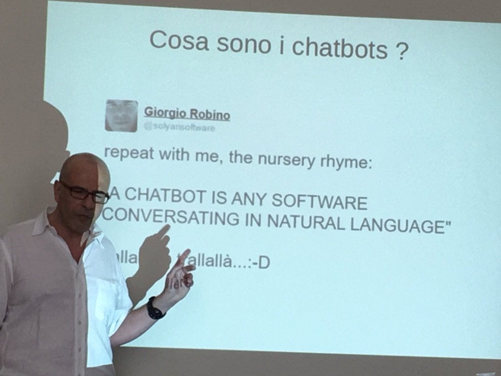

Mi piaci un bot
Riflessioni da principiante su un nuovo modo di conversare
Ma voi sapete cosa sono i chatbot? Io l’ho scoperto realmente qualche giorno fa e l’argomento così, da profana, mi ha subito affascinato. Giorgio Robino che li studia da tempo ci ha spiegato durante un incontro al Social Hub di Genova che i chatbot sono software che conversano con l’utente tramite un linguaggio “naturale”.

Una conversazione con un software può avere molti lati positivi, effettivamente. Il primo è quello che può andare avanti all’infinito, perché un bot, a meno che non sia stato programmato per farlo, non si spazientisce mai. Eppoi sicuramente, essendo nato per dare delle risposte, sarà molto preciso e chiaro. La vaghezza non fa parte della sua natura.
Gli utilizzi sono notevoli in vari settori, dai viaggi all’ecommerce, dai giochi all’e-learning, solo per citarne alcuni, per arrivare in futuro anche all’ambito medico. Tra i bot più famosi mi è venuto in mente Anna, l’assistente Ikea.
La parola assistente credo che sia quella che più di altre spieghi bene il significato di questi software.
Quello che trovo estremamente interessante per chi come me lavora nella comunicazione, è la possibilità di operare sul linguaggio, interagendo molto da vicino con una “macchina”. La commistione di psicologia, linguistica e codice è quanto di più moderno si possa pensare. E la componente umana e umanistica che c’è in ognuno di loro può dare un senso nuovo alla scrittura commerciale.
Un computer che pensa come una persona senza però aver bisogno di dormire (Scott Phoenix)
Molte professioni come già anticipava Derek Thompson sono destinate a scomparire. Tra le dieci occupazioni che potrebbero essere soppiantate da software e automatismi Thompson nomina, ad esempio, i commercialisti, gli impiegati di telemarketing e vari addetti allo sviluppo fotografico.
Alcune persone saranno sostituite proprio dai bot, che non sono robot, ma ci piace pensarli tali, forse perché resta comunque difficile accettare di essere in chat con qualcuno che non esiste, stare lì a fare domande a stringhe di codice che, ed è questo il bello, ci rispondono pure.
Sul conversational computing http://www.slideshare.net/solyarisoftware/il-conversational-computing-e-la-rivoluzione-dei-chatbot
Il primo evento italiano sulla “computazione conversazionale” sarà a Milano il 24 Giugno 2016 https://medium.com/@solyarisoftware/conversational-computation-chatbots-revolution-9035636faf3e#.ajpwyqpr4
Thompson D., What Jobs Will the Robots Take?, Atlantic, 23 gennaio 2014
Keen A., Internet non è la risposta, Egea, 2015